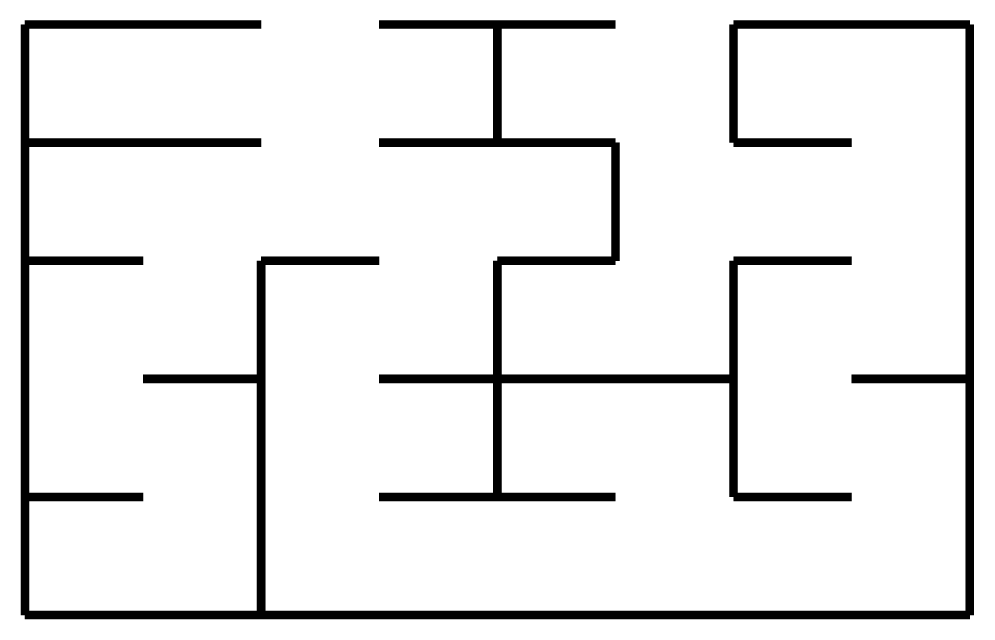

Trees: a source of unambiguous reasoning
Now look at the examples of math and program parse diagrams and you will notice a difference to parsing of many natural languages: the graphs have only one path between any two nodes. This is such an important property that it has a name: trees.
Trees in the mathematical sense
A tree is a diagram of nodes and edges in which between any two nodes there is exactly one path that does not revisit a node.
A directed acyclic graph (DAG) is a diagram of nodes and oriented edges in which we cannot go in circles following the direction of any arrows.
In the graph above there are two different paths from A to E, the first through B and the second through C. So this is not a tree. But if we remove even one edge on one of these two paths then we get a tree. For example:
When we add direction to the edges of a graph we can consider paths that only follow the arrows and so a graph which is not a tree can nevertheless become a directed acyclic graph (DAG) that is not a tree. For example:
The non-redundant paths in a proper maze (one in which there are no alternate paths) form a tree.

Note that the non-redundant paths in an improper maze (one in which there can be alternate paths) form a DAG.
The point of trees is that they have unique paths so when we given instructions between two nodes these cannot be misinterpreted. So when it comes to understanding logic, if we can organize the grammar to only build trees then we are guaranteed that everyone who reads the logic in that grammar understands it the exact same way we meant it. No double meanings and no ambiguity can exist. This is a perfect property to have if we can get it. Fortunately context-free grammars do exactly that. The only missing element is to know where to begin reading nodes of the tree. So let us choose one node as the start.
A tree is rooted if we designate one node as the root and all edges are oriented away from the root. The root is the starting point of the tree and all other nodes are its descendants. The nodes furthest from the root are called leaves.
The parse diagram of a context-free grammar is a rooted tree. In particular when we parse a sentence in the language of a context-free grammar we always get the exact same diagram.
We call this now the parse tree or the abstract syntax tree (AST).
Draw the path tree of the following maze. Make sure to reach each deadend.

Proof Trees & Natural Deduction
Trees have been so successful at organizing our intension with programs that they ought to be useful in organizing other forms of reasoning, including proofs of judgments. In fact, the Curry-Howard-Lambek correspondence seems to make this a requirement. So what we do now is replace “parse trees” with “proof trees”. This process today goes by Natural Deduction and it is the backbone of most of modern mathematical logic.
Recall our earlier proof of the proposition
Theorem: If \(n\) is even then \(n^2\) is even.
To be even means we have evidence \(k\), a natural number, where \(n=2k\). From that we derive \[ n^2=(2k)^2=2(k\cdot 2\cdot k) \] So we produced evidence \(j=k\cdot 2\cdot k\) that \(n^2\) is even. So from a truth, \(n=2k\), we derived another truth \(P:\) \(n^2\) is even.
As a diagram this proof is the following tree:
By writing the proof as a tree we start to notice that we got information from context of natural numbers, such as the associative property of multiplication. The combination of events ends with the claim we want.
A proof by Natural Deduction is a whose diagram is a tree rooted at the conclusion. The leaves of the proof tree are called the premises and the internal nodes are called deductions.
Classical Logic Proofs may be given as DAGs
In many forms of logic we are permitted to reuse a premise multiple times in a proof. You saw that in our earlier example of the properties of administrators who can both add and remove users. Yet it was not always true as we saw with resources like a USB port which can only be used by one device. Now when a judgment style is allowed to reuse a premise we often do not bother to track how many uses we make. The effect can be that within the writing of a proof we simply state the premise we use once and extract from it multiple facts. Strictly speaking this does not diagram as a tree. For example:
This is however a directed acyclic graph (DAG) since there is no cycle in the diagram. So the implicit assumption made by the author is that we are permitted to copy a premise for reuse. Doing so separates the DAG into a proof tree as required. Here’s the above DAG converted into a tree by copying the premise:
This brings up the question of how important it is to insist on only one conclusion to a list of premises. If we have a lot of facts that follow why not simply list them all?
In reality this is a perfectly standard form of proof. Mathematics often follows a proof in natural deduction with “Corollaries” or “scholia” which are just terms meant to say that we extract a different consequence form the existing argument. Since the interpretation of DAG verses tree is immaterial to many systems of judgment this causes relatively little harm to clarity. Yet be on the look out for those judgments that consider the total number of uses of our premise. Some things do not last forever and there the reuse of a premise can be highly illogical.
Below is a proof of the Division Algorithm we created in our first topic. Draw the proof tree for this proof.
Theorem (Division Algorithm): For natural numbers \(m\) and \(n\) with \(n>0\) there exist unique integers \(q\) and \(r\) such that \(m=q\cdot n+r\) and \(0\le r<n\).
Proof: If \(m< n\) then take \(q=0\) and \(r=m\) so that \(m=0\cdot n+r\). Otherwise \(-n+m\) is smaller than \(m\) and there is a some memoized (previously found) \(q\) and \(r<n\) where \(-n+m=n\cdot q+r\). Add \(n\) to both sides so that \[ m=n+-n+m-n=n+n\cdot q+r=n\cdot (1+q)+r \] So \(m=n\cdot q'+r\) with \(r< n\). \(\Box\)
If some step appears to use some fact you know from the context of natural numbers, e.g. \(n+n\cdot q=n\cdot (1+q)\), you may state it as a premise. These will indicate what hidden assumption this proof depends on. Often these offer clues for future inventions, such as inventing division of polynomials.
Warning If you involve support online you may fine a far more complicated answer than you are expected to use here. For example you make see \(\exists\) (“There exists”) and \(\wedge\) (“and”). While it is ok to use, consider replacing the symbols with words and seek an explanation that would make sense to your Babylonian tile setter as well.
When a proof becomes a maze
It is not always obvious how to take a proof in words and turn it into a tree or DAG. You can remind yourself why this must by asking: what sense is there in going in circles in your proof? Unfortunately, even seasoned mathematicians are not always conscious that proofs are trees. Making things worse is the goal of many authors to introduce a flare to their writing of proofs reorganizing sentences, inserting digressions, and changing words just for variety. A surprisingly problematic unnecessary rule by many authors is to never start a sentence with a symbol. In implementing this rule many authors take to reordering the information of a proof, giving the conclusion before the premise or using a variable before telling readers it is a variable. It is not entirely whims of authors to blame. Proofs are written often a lines of text and if we consider a tree or DAG described row by row top to bottom we can see we are forced to fold information into pockets of our text not unlike the build of a maze.
The issues notwithstanding, knowing that proofs exist as trees suggests strategies to reorganize a proof once we have constructed it. We can diagram the tree and then organize the layout so that nearby connections remain together whenever possible. We can give diagrams as part of the proof when the connections get complicated. We can prune branches and give them as individual smaller trees (“refactoring”). So while flattening a tree into a linear discussion is never a clean job, avoid being a lazy author so that your proofs do not become a maze.
Summary
- Trees are diagrams in which any two nodes have a unique path between them. They give unambiguous instructions.
- Context-free grammars parse as trees while remaining capable of expressing formulas and programs.
- Proofs, when organized by Natural Deduction are trees rooted in the conclusion and whose leaves are the premises.